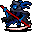

切り裂きの悪魔 Reaper
英語版 CrawlWiki の記事「Reaper」(0.34 向け、2026-10-06 版)の翻訳です。原文の著者は編集履歴をご覧ください。
| 切り裂きの悪魔 2  | |
|---|---|
| HP | 46-95 |
| HD | 14 |
| XP | 1134 |
| 速度 | 10 |
| AC | 15 |
| EV | 10 |
| 意志力 | 100 |
| 攻撃1 | 36(打撃: 引きずり)
|
| 耐性 | rC+ rPois+ rMiasma rN+++ rTorm |
| 弱点 | 神聖 |
| 生息地 | 陸上 |
| 知能 | 人間並み |
| 使用 | 初期装備 扉を開ける |
| 分類 | 悪魔 |
| 体格 | 中くらい |
| 種類 | 切り裂きの悪魔、切り裂きの悪魔 |
| フラグ | 戦士 霊視 話す 飛行 邪悪 |

| 巨大な大鎌を振るう、つきまとうような不気味な姿のもので、生ける者の魂を絶え間なく刈り取っている。
(原文ではここに歌詞の一節が引用されている。歌詞は訳出しない。) |
基本情報
切り裂きの悪魔は、ランダムなブランド付きの大鎌で武装した2級悪魔だ。魔法は使わないが、それなりにしぶとく、間合いの長い近接攻撃は大きなダメージを与えるうえ、こちらを後ろへ引きずり込む。アビス、パンデモニウム、地獄の各分岐でよく見かけるが、氷の洞穴の構造によっては、そこに出てくることでも知られている。上位デーモンの召喚の呪文で呼び出してくるモンスターもいる。
小技
- 間合いの長い攻撃は岩の巨人よりもさらに重く、しぶとさも同じくらいある。特に早い段階で出会ったら、侮らないこと。
- 近接戦闘を得意とするキャラクターなら、単体ではそれほど苦労しないはずだ。しかし、目の前の敵の相手をしているあいだに後列から攻撃させておくと、手ひどい被害を受けかねない。武器のブランドが混沌や歪曲だと判明したときは特に気をつけよう。
- タイル版のプレイヤー(とモンスターの説明を読む人)は要注意。見た目や説明がどれだけアンデッドっぽくても、このモンスターはアンデッドではない。アンデッドの解呪もリーの瞬間解体術も効かない。
- 切り裂きの悪魔はこちらを引きずっていけるので、階段の近くで戦うときや階段ダンスをするときは気をつけよう。